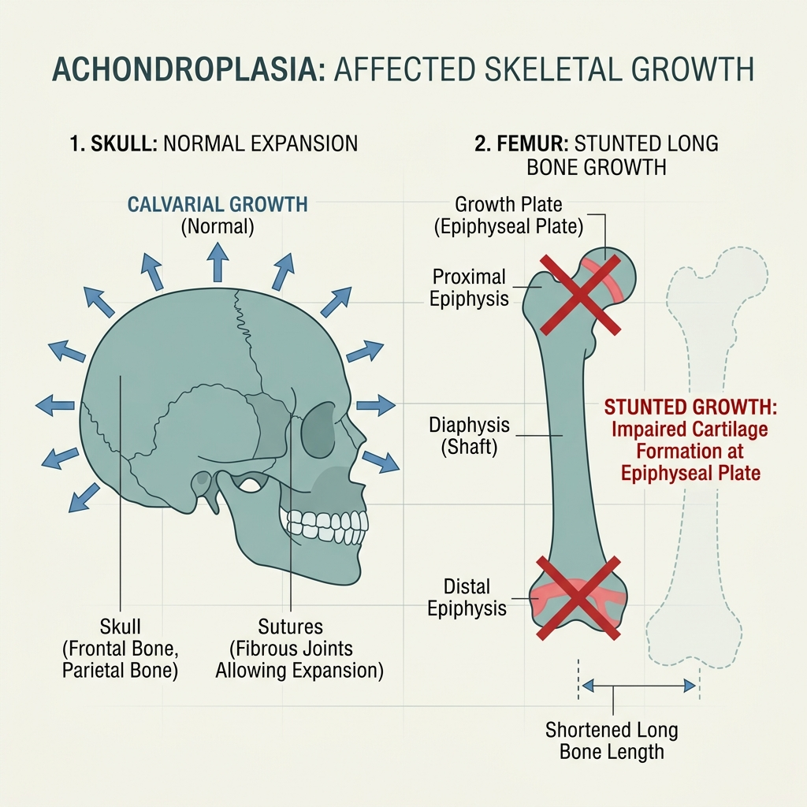
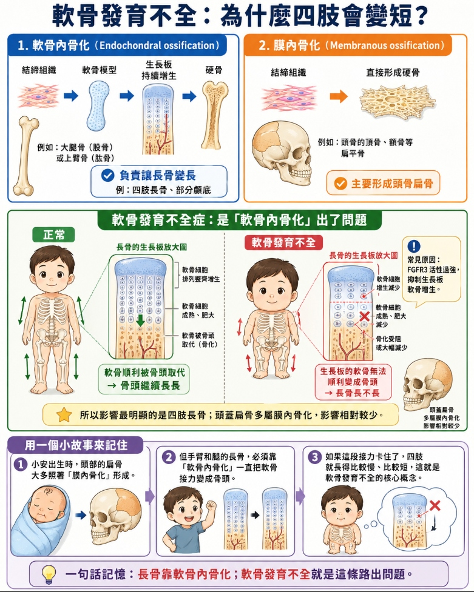
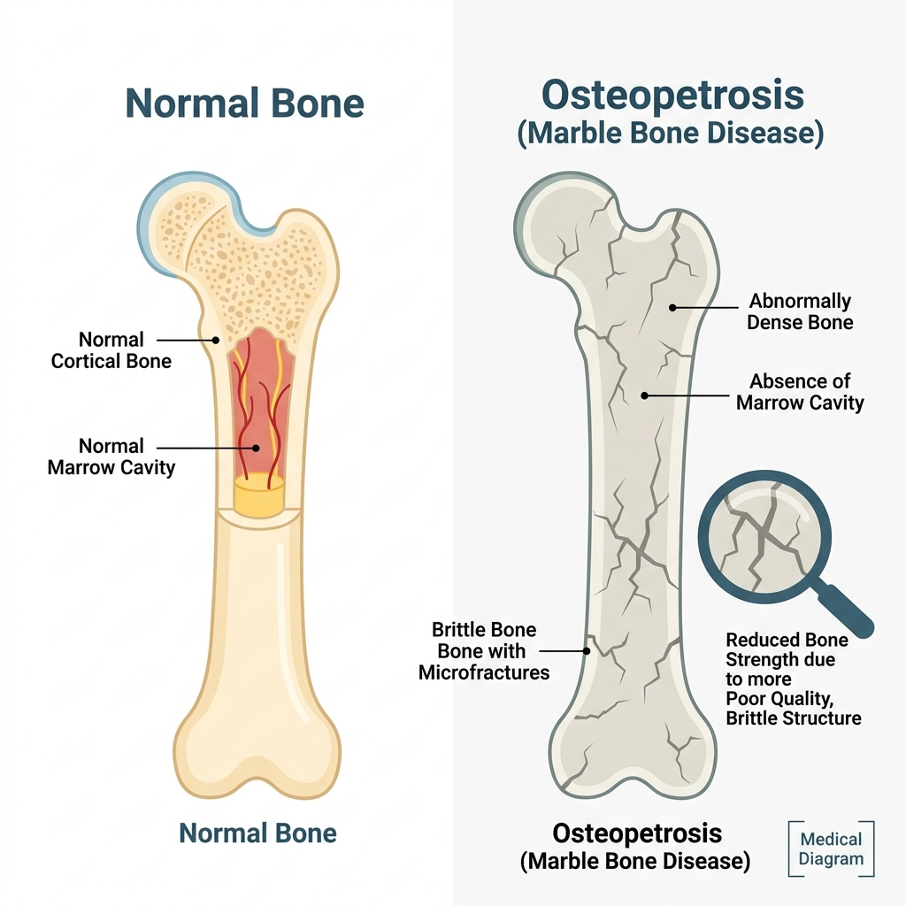
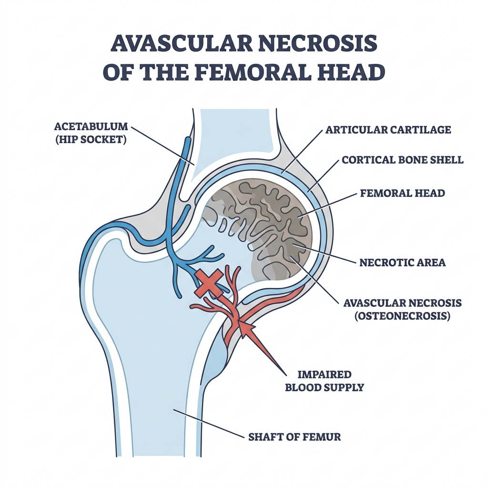
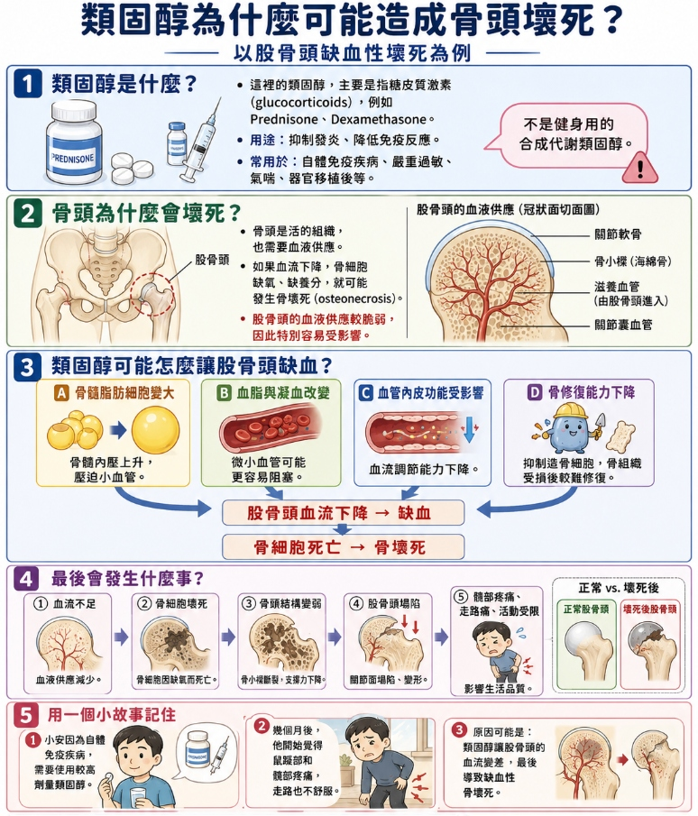

先天性骨骼異常：基因決定的命運
骨骼的發育需要精密的藍圖。當基因出現突變時，有人生下來骨頭就像玻璃一樣一碰就碎，有人四肢短小，也有人的骨頭硬得像大理石，卻毫無韌性。
1. 成骨不全症 (Osteogenesis Imperfecta, OI)
這就是導讀中那位「藍色鞏膜、反覆骨折」的小男孩得的病，俗稱玻璃娃娃。
最核心的問題在於製造骨骼基質的重要原料——第一型膠原蛋白 (Type I Collagen) 出了問題。
- 致病基因：與 17q21.3-q22 的
COL1A1基因，或 7q21.3-q22 的COL1A2基因突變有關。 - 遺傳模式：主要是體染色體顯性遺傳 (Autosomal dominant)，臨床上可進一步分為四型 (Four subtypes)。
- 臨床表現：反覆骨折、聽力喪失、牙齒發育不良，以及經典的藍色鞏膜 (Blue sclera)。
考題非常喜歡騙你：「因為缺乏正常的 Type I collagen，病人的虹膜 (iris) 可能會出現 Lisch nodules (李氏結節)」。
錯！錯！錯！ Lisch nodules 是神經纖維瘤第一型 (Neurofibromatosis Type 1, NF1) 的特徵，跟成骨不全症完全無關！成骨不全症的眼睛特徵是藍色鞏膜。
Regarding osteogenesis imperfecta, which of the following descriptions is incorrect?
關於成骨不全症，下列敘述何者錯誤？
解答與解析
答案：(D)
解析：成骨不全症的眼睛特徵是「藍色鞏膜 (Blue sclera)」。Lisch nodules (虹膜上的錯構瘤) 是神經纖維瘤第一型 (NF1) 的特徵，不要搞混了！
2. 軟骨發育不全症 (Achondroplasia)
這是造成侏儒症 (Dwarfism) 最常見的原因。

- 致病基因：第 4 對染色體上的 FGFR3 基因發生「活化突變 (Activating mutation)」。
- 遺傳模式：體染色體顯性遺傳 (Autosomal dominant)。
- 臨床表現：患者特徵是四肢短小，但脊椎長度正常。
我們的骨頭發育有兩種方式：一種是軟骨變硬骨的「軟骨內骨化 (Endochondral ossification)」，用來長長骨；另一種是直接由結締組織變硬骨的「膜內骨化 (Membranous ossification)」，用來長頭骨扁骨。
軟骨發育不全症是「軟骨內骨化」出了問題！因此考題如果說「這類患者在骨骼發育過程中，缺乏正常的膜內骨化 (abnormal membranous ossification)」，這句話是錯的！他們的膜內骨化完全正常！

Which one of these descriptions about achondroplasia is incorrect?
關於軟骨發育不全症，下列敘述何者錯誤？
解答與解析
答案：(C)
解析：軟骨發育不全是由於 FGFR3 基因活化突變，導致「軟骨內骨化 (endochondral ossification)」受到抑制，長骨無法變長造成短肢。但頭骨的「膜內骨化 (membranous ossification)」是完全正常的！這題連續考了三年，是超級重點。
3. 大理石骨病 (Osteopetrosis)
正常的骨頭要不斷地「建設（成骨細胞）」與「拆除（破骨細胞）」。如果負責拆除的破骨細胞 (Osteoclast) 罷工了（缺乏或失去吸收骨質的能力），骨頭就會不斷堆積。

- 骨頭特徵：骨頭密度極高，X 光下看起來又白又亮像大理石。
- 致命弱點：雖然密度高，但內部結構就像粉筆一樣，非常脆、極易骨折。
- 併發症：因為骨頭太厚，佔據了骨髓腔，導致造血功能變差、肝脾腫大 (hepato-splenomegaly)、容易反覆感染；骨頭增厚壓迫到神經孔，會造成腦神經麻痺 (cranial nerve palsy)。
- 治療：因為破骨細胞是由造血幹細胞分化而來，所以這類病人可以接受造血幹細胞移植 (Hematopoietic stem cell transplantation) 來治療。
考題會故意說：「這些病人的骨頭硬得像金剛狼 (Wolverine) 一樣，讓他們『比較不容易骨折 (less prone to fractures)』」。
錯！大理石骨病患者的骨頭很脆，非常容易骨折！
Which of the following descriptions about osteopetrosis is incorrect?
關於大理石骨病，下列敘述何者錯誤？
解答與解析
答案：(A)
解析：大理石骨病雖然骨質密度高，但內部結構異常，像粉筆一樣「非常容易骨折 (more prone to fractures)」，絕對不像金剛狼一樣堅固。
骨折與缺血性骨壞死
1. 骨折 (Bone Fracture) 的分類與癒合
骨折不是只有受到強力撞擊才會發生。
- 疲勞性骨折 (Stress fracture)：長時間反覆受力引起，最常發生在需要承受體重的腳部蹠骨 (metatarsal bones)（例如行軍的新兵、長跑選手）。
- 病理性骨折 (Pathologic fracture)：骨頭原本就因為疾病（如腫瘤、骨質疏鬆）而變得脆弱，輕微外力就斷了。
- 骨折的癒合：大約在骨折後 6 週，骨折處會形成完整的編織骨 (woven bone) 網狀結構。
Which of the following descriptions about fractures is most appropriate?
關於骨折的敘述，下列何者最為適切？
解答與解析
答案：(D)
解析：A、B、C 的敘述皆為正確的病理學概念。
2. 缺血性骨壞死 (Osteonecrosis / Avascular Necrosis)
回到導讀中那位酗酒大叔，他的髖關節痛就是因為血液循環被阻斷，導致骨頭餓死了。

骨壞死最常與以下三個因素有關：外傷 (trauma)、長期酗酒 (chronic alcohol abuse)、使用類固醇 (steroid use)。在長期酗酒的病人中，最常發生的部位就是股骨頭 (femoral head)。

- 考題常說：「骨壞死大多是由感染 (infections) 引起的。」這句話是錯的！感染引起的那叫骨髓炎，骨壞死主要是不良習慣或外傷引起血管阻塞。
- 當股骨頭發生缺血時，因為血液供應來源的差異，內部的骨髓 (medullary bone) 會先壞死，而表面的皮質骨 (cortical bone) 和軟骨帽 (cartilage cap) 暫時還能存活。
Regarding osteonecrosis (or avascular necrosis), which of the following descriptions is incorrect?
關於缺血性骨壞死，下列敘述何者錯誤？
解答與解析
答案：(A)
解析：缺血性骨壞死的主因是外傷、酗酒、類固醇造成血流阻斷，而非感染 (感染引起的是骨髓炎)。選項 (D) 也是常考的正確觀念，因血供差異，骨髓會先壞死。
骨髓炎與骨質疏鬆
1. 骨髓炎 (Osteomyelitis)
骨頭如果被細菌入侵，就會發炎化膿。細菌可以透過直接接觸（如開放性骨折）或血液傳播（血行性）進入骨頭。
- 位置差異：在兒童，細菌最喜歡停留在長骨的幹骺端 (metaphysis)（尤其是膝關節附近）；而在成人，則較常見於腳部（如糖尿病足）。
- 特殊部位：上頷骨與下頷骨的骨髓炎，通常與口腔衛生不良及蛀牙 (dental caries) 息息相關。
考題極度愛考：「在 5-10 歲兒童長骨幹骺端的骨髓炎，最常見的致病菌是大腸桿菌 (E. coli)。」
錯！最常見的致病菌永遠是金黃色葡萄球菌 (Staphylococcus aureus)！E. coli 並非首位。
Regarding osteomyelitis, which of the following descriptions is incorrect?
關於骨髓炎，下列敘述何者錯誤？
解答與解析
答案：(C)
解析：兒童血行性骨髓炎最常見的致病菌是「金黃色葡萄球菌 (S. aureus)」，選項故意寫 E. coli 來騙人。
2. 骨質疏鬆 (Osteoporosis) 與代謝性骨病
這是一個無聲的殺手。人類的骨質大約在 25-35 歲之間達到巔峰 (peak bone mass)，之後如果吸收大於生成，骨質就會慢慢流失。病理下可見骨小樑 (trabeculae) 變小變薄，無法提供足夠的結構支撐。
危險因子：缺乏運動、酗酒、維生素 D 缺乏，以及使用類固醇。
注意陷阱：考題會說「類固醇治療可以減緩骨質流失的速度 (slow down the rate)」，這是錯的！類固醇會加速骨質流失！
維生素 D 缺乏的影響：
- 在兒童稱為佝僂症 (Rickets)。
- 在成人，維生素 D 缺乏可能導致虛弱、骨痛，甚至完全沒症狀。此時的骨骼病變稱為軟骨症 (Osteomalacia)，絕不能稱為 Rickets（這是考點）。
Which of the following statements is incorrect?
下列敘述何者錯誤？
解答與解析
答案：(B)
解析：成人的 Vit D 缺乏導致的骨骼病變稱為「軟骨症 (Osteomalacia)」。Rickets (佝僂症) 是專指發生在「兒童」骨骼發育生長板未閉合時的病變。
一分鐘考前秒殺心法
進考場前，請把這幾句話印在腦海裡：
- 成骨不全症 (OI) = Type I Collagen (COL1A1/COL1A2) 突變 = 藍色鞏膜 (絕對不是 Lisch nodules！)。
- 軟骨發育不全症 = FGFR3 突變 = 短肢但脊椎正常 = 缺乏正常的「軟骨內骨化」(膜內骨化完全正常！)。
- 大理石骨病 = 破骨細胞沒作用 = 骨頭很硬但極脆易斷 (絕不像金剛狼) = 可用造血幹細胞移植。
- 骨壞死 (AVN) = 外傷/酗酒/類固醇引起 (不是感染) = 骨髓先死，表面皮質骨晚點死。
- 骨髓炎 = 兒童好發於長骨 Metaphysis = 最常見病原體是 S. aureus (絕對不是 E. coli！)。
- 骨質疏鬆與代謝 = 類固醇會「加速」流失 = 成人 Vit D 缺乏叫「軟骨症(Osteomalacia)」，兒童才叫 Rickets。